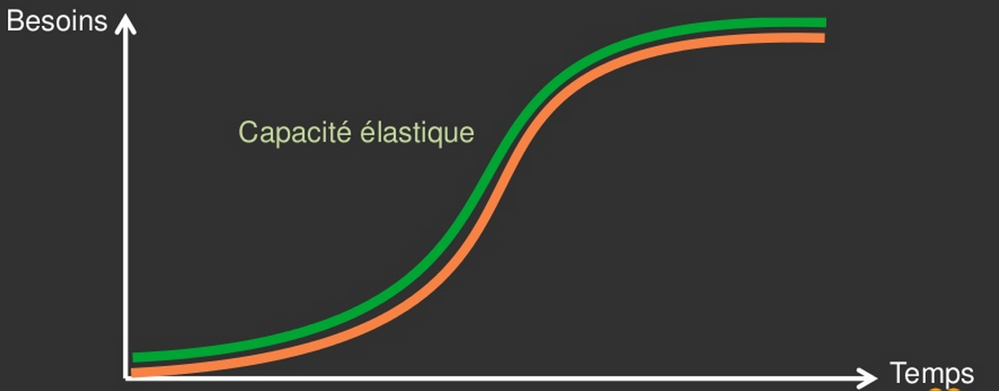
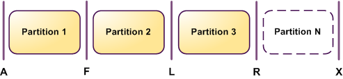
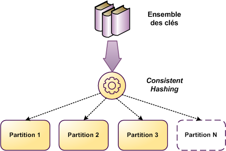
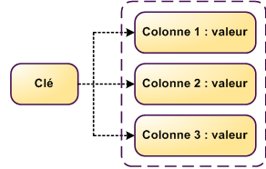

Cloud Computing et Architectures "Scalables"
ou comment utiliser la flexibilité du Cloud pour monter en charge
INSSET - Master 2 Cloud Computing
Septembre 2013 - Bertrand Tornil
Montée en charge?

Rappelons en quoi consiste un Service Web (over HTTP)
Un client fait une requête HTTP
GET /bob http/1.1
Host: www.mon_super_service_web.com
Le serveur
- ... reçoit la réquête...
- ... la traite ...
- ... et génère une réponse
HTTP/1.1 200 OK Content-Type: text/html Content-Length: 9 Hello bob
La charge monte
Plusieurs clients en même temps (Concurence)

Le temps de traitement d'un requête http augmente
Solution 1
Investir dans une machine plus puissante
Forcément limité.
Et le prix s'envole.
Solution 2
Répartir la charge sur plus de machines
On achète de nouvelles machines (commande, installation, monitoring, test, déploiement)
OU
On lance une nouvelle instance sur le Cloud
Souplesse \o/
Notion de capacité élastique

Notion de capacité élastique
Premiers temps
Séparation des principales briques de l'architecture
- Le serveur web
- La DB
C'est la première marche.
Stratégie multi-frontal
On "clone" le serveur web
- Sur AWS ou autre IAAS : en 1 commande, nous avons 1 nouvelle instance bootée en 1 minute
- Un outil de gestin de configuration comme puppet, chef ou salt-stack : industrialisation du déploiement de la configuration
- Et un outil capistrano ou fabric : industrialisation du déploiement du code
Et pour répartir les requêtes entre les frontaux, on place un "load balancer" devant
Une image valant souvent mieux qu'un long discours...

Stratégies de "Load balancing"
Round robin
Signifie tourniquet.
Avec un tel ordonnancement, chaque machine est servie l'une après l'autre, sans notion de priorité
Least connected
Le load-balancer doit pouvoir connaître l'état des connexions des frontaux
Il adapte le flot selon la charge réseau du frontal
less loaded
Cette fois c'est l'état de charge général du frontal qui est pris en compte
Remarques sur le multi-frontal
Cette stratégie permet de monter pratiquement indéfiniment. C'est une recette magique, qui a fait ses preuves
Chez Facebook, on estime qu'ils ont monté plus de 30000 serveurs web.
Néanmoins, elle soulève de nouveaux problèmes :
- Le partage d'information entre frontaux (session utilisateurs)
- Les déploiements
- La maintenance
Les données
Arrive un moment, ou l'ajout de serveurs webs ne peut plus seul, régler le problème de la montée en charge : tous ces seveurs webs "attaquent" la même base de données....
... qui elle aussi arrive à sa limite
L'accès aux données est notre nouveau point de contention.
Et bien nous allons augmenter le nombre de machines pour la DB
Ok, mais comment ?
On ne peut pas simplement cloner. Les DB seraient rapidement désynchronisées les unes des autres.
La réplication
Pour les services qui se caractérise côté DB par beaucoup de lectures, par rapport aux ecritures
Une machine est "Master" : c'est sur elle qu'on effectue toutes les commande en écriture
Une ou plusieurs machines sont des "Slaves" ; sur lesquelles les opérations de lecture sont effectuées
Attention : gestion du retard
Mais au bout d'un moment...
Chaque machine qui héberge une DB peut arriver à sa limite.
Dans le schéma master-slaves, le master devient à son tour la faiblesse de l'architecture.
Surtout sur les services où le nombre d'écritures est du même ordre de grandeur que le nombre de lecture (Réseau sociaux, fils de commentaires, discussions)
Solution #1 : Partitionnemnent vertical
On dispatch les tables sur plusieurs machines
On commence à dénormaliser le modèle : certaines tables ne pourront plus être jointes.
Solution #2 : Partitionnement horizontal
le Sharding
Principe : on coupe les tables en plus petites tables que l'on peut mettre sur des bases de données différentes.
Avantage: assez simple
Inconvénient: difficile à faire évoluer en production
Une réponse peut être de pré-sharder ses tables dès le début.
Le NoSQL
Avec la dénormalisation du modèle, on se retrouve à s'intéresser à d'autre technologies.
On y arrive... (teasing ...)
Le NoSQL
un peu de théorie
Le théorème CAP de Brewer (1998 - 2000)
en très approximatif
C : Consistency
Un service est dit "consistent" s'il opère ses opérations entièrement... ou pas du tout
Notions de transactions, propriétés ACID (Atomicité, Cohérence, Isolation, Durabilité)
Tous les nœuds du système voient exactement les mêmes données au même moment
A : Availability
Un service est "available"... s'il marche...
On considère qu'il marche quand chaque client peut utiliser le service en écriture et en lecture
Garantie que toutes les requêtes reçoivent une réponse
P : Partition Tolerance
Dès lors que les données sont distribuées en plusieurs endroits (machines, lieux), aucune panne moins forte qu'une destruction globale du réseau ne peut justifier un arrêt du service
Que dit le théorème CAP ?
des 3 propriétés CAP... on peut n'en garantir que 2
Et bien, nous voilà bien ...
Quelles conséquences ?
La conviction générale est que pour des systèmes distribués très étendus, les concepteurs ne peuvent renoncer à P et doivent donc faire le choix difficile entre C et A.
Dans un certain sens, le mouvement NoSQL consiste à faire des choix qui se concentrent sur la disponibilité en premier lieu, et la cohérence en second; les bases de données qui adhèrent aux propriétés ACID (Atomicité, Cohérence, Isolation, Durabilité) font l'inverse.
Garder CP
L'applicatif doit supporter la panne de partitions
Peut se réaliser entre autre par du découpage fonctionnel : 1 fonctionnalité est down, mais ne gène pas le reste du service
Garder le AP
concept du "Eventually Consistent" (W.Vogels)
notions de replicas(N), de quorum en lecture(R), en écriture(W)
les "vector clocks" retracent l'historique des opérations, et permettent à l'applicatif de trancher. Parfois selon une logique métier
L'art de la distribution des données
Nous avons des données, et plusieurs machines sur lesquelles les envoyer
Comment allons-nous nous y prendre ?
Table de hachage persistante
les informations sont ici stockées sur un nœud unique.
Ce mode de stockage est donc efficace tant que le volume de données stockées et la charge de requêtes n’excèdent pas les capacités de la machine.
En outre aucune tolérance aux pannes n’est ici admise puisque les données ne sont pas redondées.
Sharding en distribution modulo
On distribue les clés selon le modulo (du md5 de la clé par exemple)
- C'est très simple simple
- mais on doit re-distribuer N-1/N data lors de l'ajout d'un N+1-ième noeud
Sharding en hashing consistent
Un hashring est généré
- C'est plus complexe
- par contre, on ne doit re-distribuer que 1/N data lors de l'ajout d'un N+1-ième noeud
Réplication sur N instances
Type simple : 1 partition par instance
Type replica : M partitions par instances

- On retrouve la notion de relachage de la consistence
- Dynamo (Amazon) et BigTable de google fonctionnent de cette manière
Le NoSQL
Généralités
- Le NoSQL regroupe de nombreuses bases de données,
- assez récentes pour la plupart,
- avec une logique de représentation de données non relationnelle
- et qui n’offrent donc pas une interface de requêtes en SQL.
À propos du NoSQL
Ce n'est pas une solution miracle pour le stockage de données
Par contre, la logique de représentation des données différentes peut apporter une reponse satisfaisante à certains problèmes
Et comme toujours
Use The Right Tool !

Les NoSQL "Clé-Valeur"

- En général, très rapides
- Possible de requêter sur la clé, peu sur les valeurs
- Exemples : Memcache, Riak, Redis, Voldemort
Les NoSQL "Clé-Colonne"
- Colonnes différentes pour chaque ligne
- Capacité à stocker des listes d'informations
- Requétage, indexes
- Capacité d'accéder à des intervalles de colonnes
- Exemples : HBase, Cassandra
Les NoSQL "Clé-Document"

- Extension du modèle clé-valeur
- Un document contient des données organisées de manière hiérarchiques (XMl, JSON)
- Indexes, notions de champs, requêtes
- Exemples : MongoDB, CouchDB
Les NoSQL "Graphs"

- stocke des données liées par des relations
- réseaux sociaux
- base de données géographiques
- Exemples : Neo4j, HypergraphDB, FlockDB
Ajouter un système de cache devant les données
Nous allons utiliser un stockage plus rapide qu'une base de donnée, mais non-relationnel
Dans les fait, cela revient à mettre en oeuvre des techno comme memcache. Il s'agit d'un cache en mémoire, accessible au travers du réseau. Il a été développé par Livejournal.
Par exemple, nous remplaçons:
function get_by_id(id):
return query('SELECT FROM ma_table WHERE id=%d' % id).fetch_one()
function get_by_id(id):
if cache['ma_table'].get(id) is not null:
// la valeur est en cache : pas besoin de requêter la DB
return cache['ma_table'].get(id)
else:
// la valeur n'est pas en cache, on requête
res = query('SELECT FROM ma_table WHERE id=%d' % id).fetch_one()
// et on garde la réponse pour plus tard
cache['ma_table'].set(id, res)
return res
Mais attention... de nouveaux problèmes se présentent :)
There are only two hard things in Computer Science: cache invalidation and naming things. -- Phil Karlton
Pour aller plus loin :
- cache de listes
- cache d'élément de listes
- structure complexes, imbriquées
- ...
Avec toutes ces machines / instances
Fallacies of Distributed Computing
- The network is reliable.
- Latency is zero.
- Bandwidth is infinite.
- The network is secure.
- Topology doesn't change.
- There is one administrator.
- Transport cost is zero.
- The network is homogeneous.
Some Case Studies
Case study #0
IsCool Entertainment
La montée en charge du jeu IsCool
Les débuts ...
En 7 mois, l'application est passée de 0 à 850 000 utilisateurs uniques / jour.
600000 pages vues / jour
... puis ...
Choix rapide du cloud, pour multiplier les frontaux webs
Mise en cache (memcache)
Sharding massif (certaines sur 500 tables, éparpillées sur 20 serveurs mysql)
... refactor -> v2 -> v3
symfony 2
Redis (depuis la version 1.0)
Utilisation d'outils de monitoring exotiques : Pinba
Refonte des briques les plus chargées (échange de points, leaderboard)
Au final, quelques chiffres
20M pages vues / jour (35M en pic)
130 000 sessions php simultanées sur l'ensembre de frontaux
1Ma de points échangés / jour (record à 2Ma)
Au total, 14M de personnes seront passées sur le jeu
Case study #1
30+ million users in less than 2 years
25k signups in the first day
everything is on fire!
scaling = replacing all components of a car while driving it at 100mph
Case study #2
Premier étage (Mars 2010)
- rackspace
- 1 web
- 1 DB
Deuxième étage (Janvier 2011)
- AWS EC2 + S3 + Cloudfront
- 1 nginx + 4 web engine
- 1 mysql master + 1 slave
- 1 task queue + 2 task processor
- 1 mongodb
Troisième étage (Octobre 2012)
- rackspace
- 1 web
- 1 DB